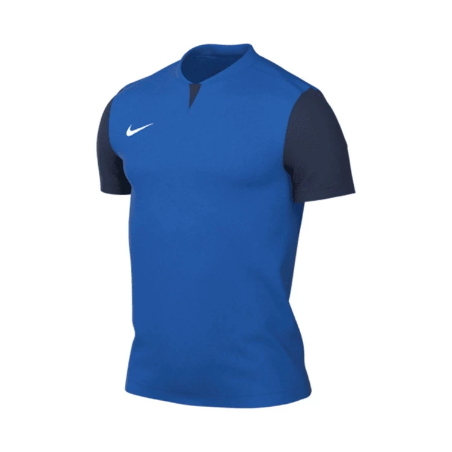
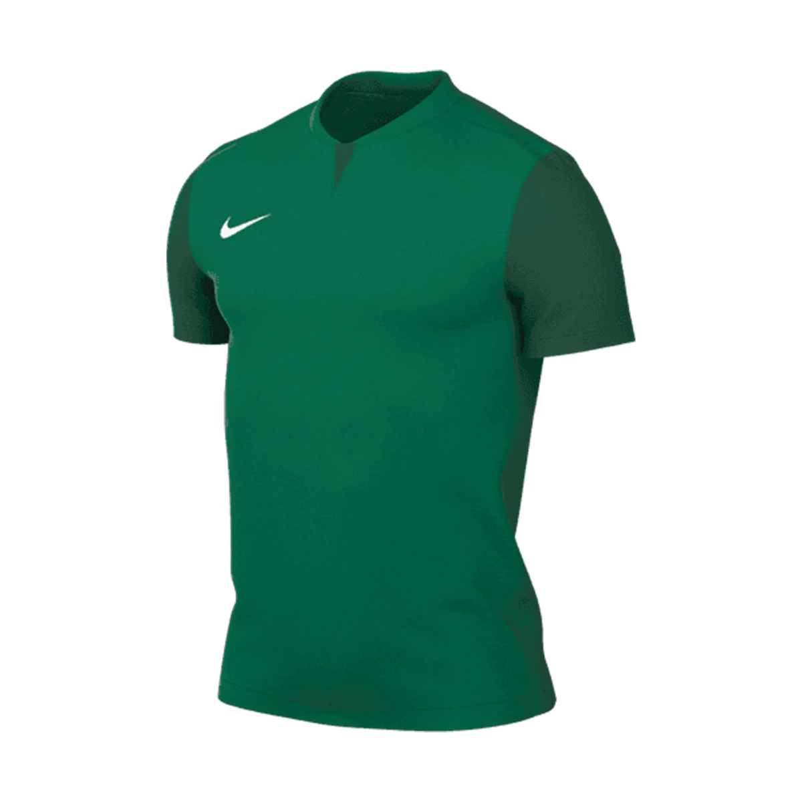
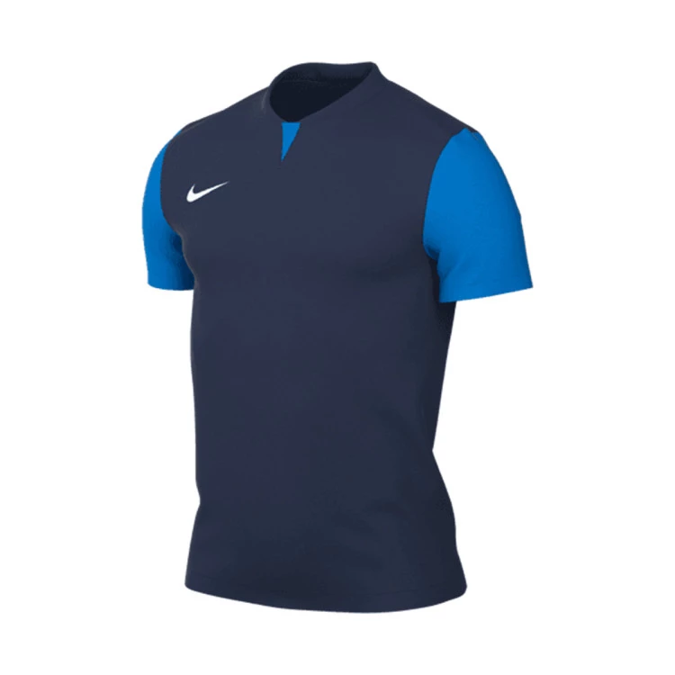
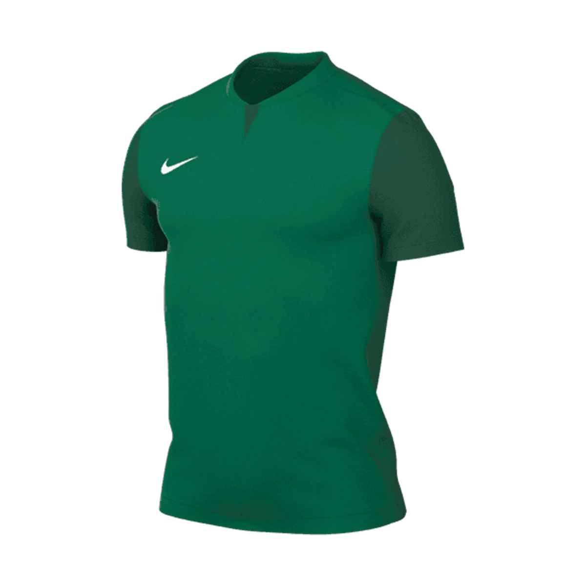
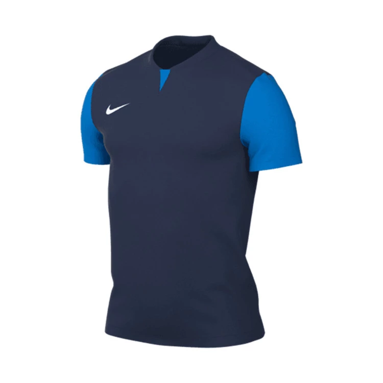
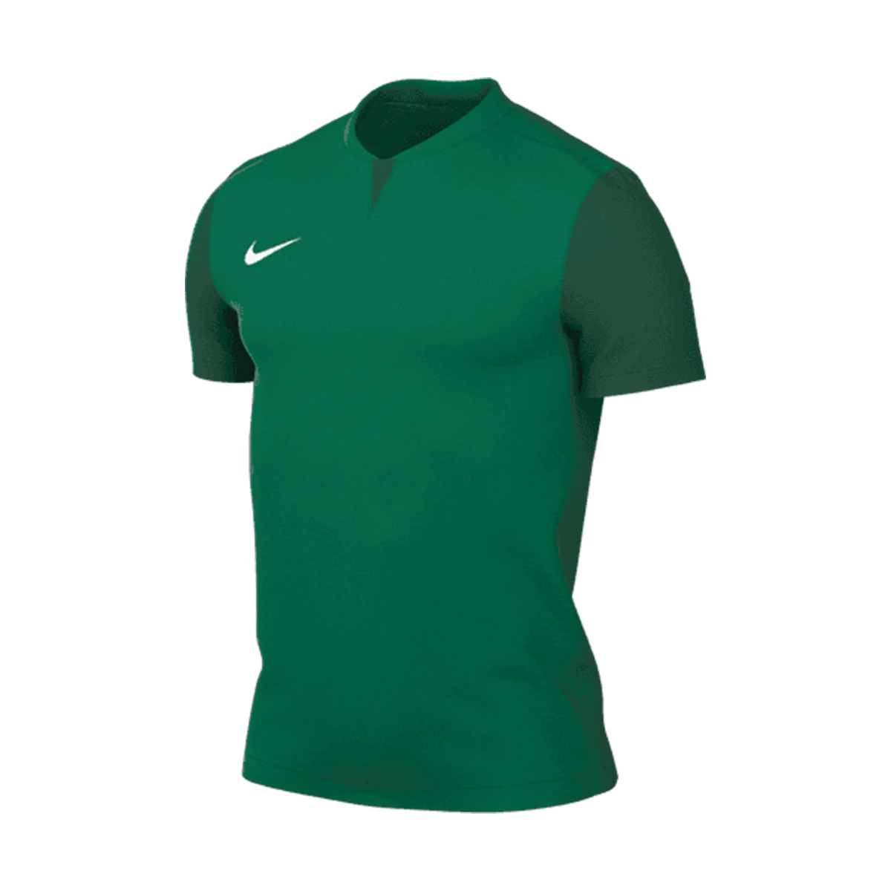
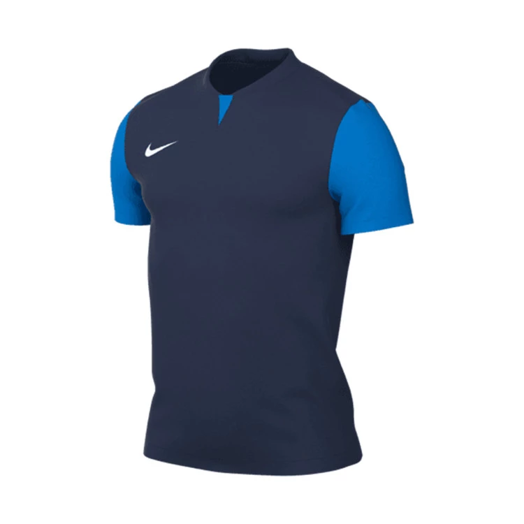
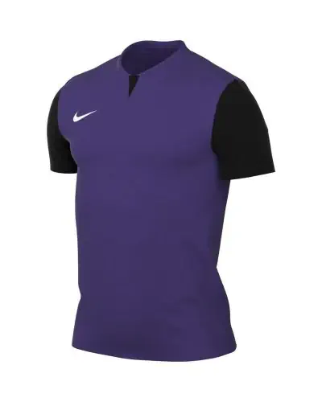

 






NORTHYARD Camisetas atléticas para correr para hombre, de secado rápido, camisetas de entrenamiento de manga corta para deportes, gimnasio, ropa deportiva de rendimiento
Acerca del producto
* Tejido de malla transpirable: la camiseta para correr para hombre está hecha de tela ligera de secado rápido que puede absorber eficazmente la humedad y el sudor, manteniéndose seco y cómodo durante todo el día (el material es suave y agradable al tacto, adecuado para entusiastas del deporte). Lavable a máquina.
* Único diseño de cuello redondo - Rayas reflectantes con logotipo estampado combinado con dos elegantes puños reflectantes a la izquierda y derecha (rayas reflectantes en el dobladillo trasero de la ropa), te permiten mejorar la seguridad en situaciones de poca luz.
Precio: $10.00